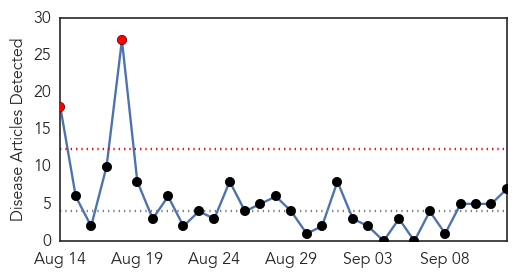
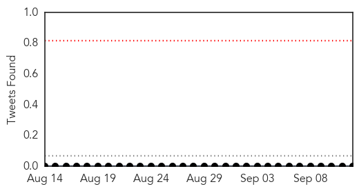
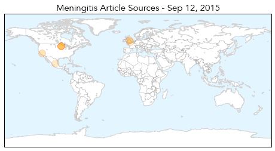
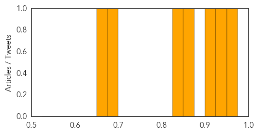
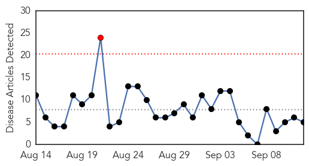
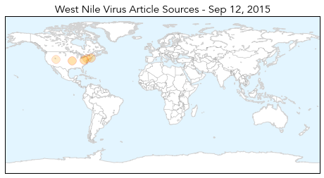
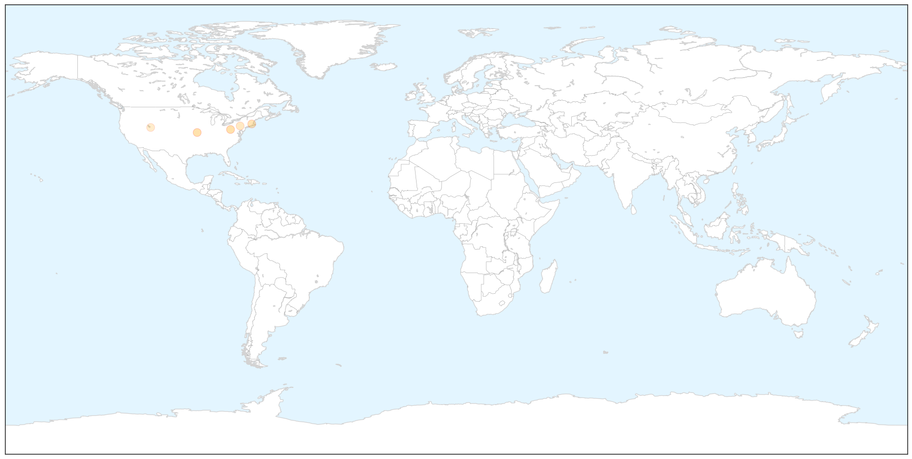
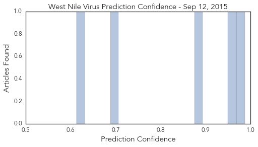

Meningitis
30-Day Web Trend
2 alerts, 0 warnings

30-Day Twitter Trend
0 alerts, 0 warnings

Article Locations
Article Confidences
Top Articles:
- 0.958
- New vaccine to prevent meningitis to be offered to babies
- 0.928
- Chipotle linked to salmonella outbreak in Minn., health officials say
- 0.917
- Chipotle Linked To Salmonella Outbreak in Minnesota
- 0.858
- New push for Meningitis B vaccines at U.S. colleges and universities -- Health & Wellness -- Sott.net
- 0.839
- Salmonella Outbreak in Minnesota Allegedly Traced to Chipotle Restaurants
- 0.679
- Uttlesford mum whose 4-year-old son died of meningitis urges other parents to vaccinate their kids
- 0.662
- Maryland: Health officials warn public of Listeria risk with Picnic Gourmet cheese spreads
Top Tweets:
-
No tweets found for Sep 12, 2015
West Nile Virus
30-Day Web Trend
1 alerts, 0 warnings

30-Day Twitter Trend
0 alerts, 0 warnings

Article Locations

X

Article Confidences
Top Articles:
- 0.987
- First human case this year of West Nile virus reported
- 0.967
- County resident dies from West Nile Virus
- 0.881
- 2nd human case of West Nile confirmed in Massachusetts
- 0.702
- Mosquito spraying set for 5 Luzerne County municipalities on Monday
- 0.613
- Experts offer prevention tips after 3 cases of West Nile Virus reported in Salt Lake County
Top Tweets:
-
No tweets found for Sep 12, 2015